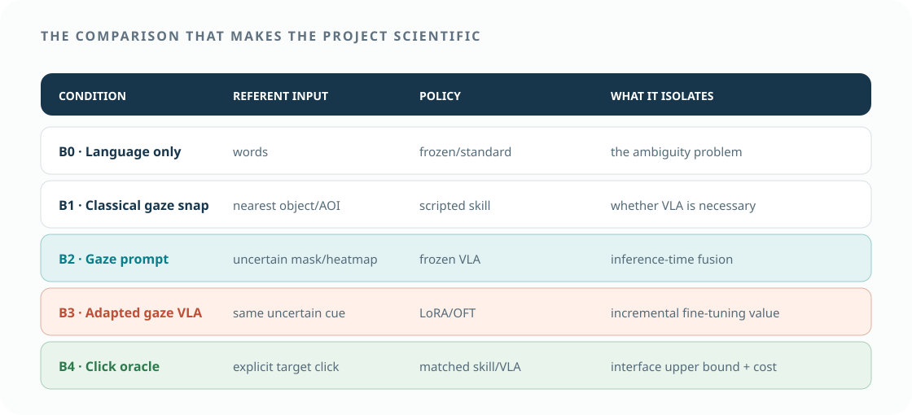
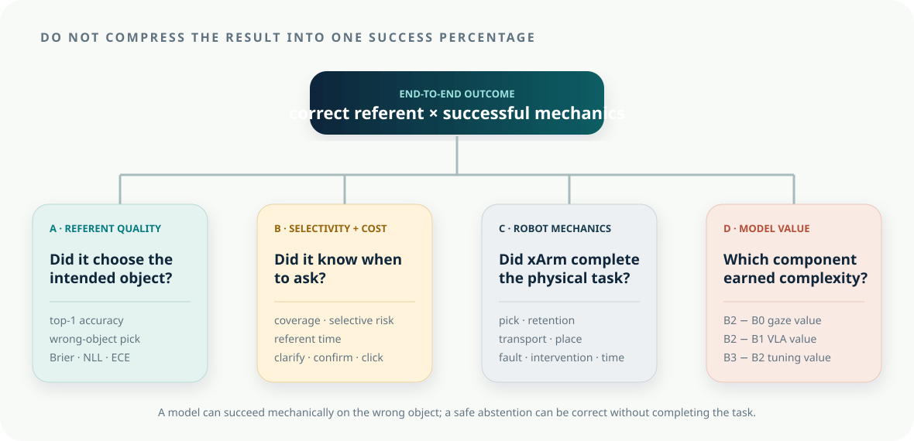

Interaction value
Does uncertainty-aware gaze–language input reduce wrong-object picks and referent time relative to language-only input in ambiguous scenes?
Evaluation and claim logic
A demo answers “can it run once?” The benchmark answers four harder questions: Was the intended object identified? Did the robot complete the mechanics? Was gaze faster or less burdensome than clicking? Did adaptation improve beyond a frozen VLA and a classical gaze pipeline?

01 · Research questions
Prioritize intent errors and time. Mechanical success, uncertainty behavior, and VLA adaptation explain the result without diluting it into dozens of outcomes.
Does uncertainty-aware gaze–language input reduce wrong-object picks and referent time relative to language-only input in ambiguous scenes?
How does gaze compare with an explicit target click in time, error, confirmation burden, and user workload?
Does gaze-prompted VLA outperform classical gaze-to-object snapping with the same masks and robot skills?
Does xArm-specific LoRA/OFT improve held-out end-to-end success over the same gaze prompt with a frozen VLA?
Primary success requires lower wrong-object risk without an unacceptable increase in abstention or total completion time.
02 · Baselines and ablations
Use the same scenes, candidate masks, xArm guard, camera, and outcome scoring wherever possible. A weak or unmatched baseline makes the VLA result uninterpretable.
| Contrast | Interpretation if positive | Interpretation if null/negative |
|---|---|---|
| B2 − B0 | gaze prompting resolves ambiguity beyond words | gaze cue or task timing is not adding value |
| B2 − B1 | VLA adds behavior-level value beyond classical grounding | simpler gaze-to-object + skill is sufficient |
| B3 − B2 | xArm-specific adaptation adds transferable value | fine-tuning cost is unjustified or data insufficient |
| B2/B3 − B4 | gaze approaches click reliability with lower interaction cost | explicit clicking remains the practical interface |
| selective vs forced choice | abstention reduces risk at acceptable coverage | thresholds reject too much or confidence is uninformative |
03 · Stress factors
A single uncluttered scene cannot support an industrial ambiguity claim. Manipulate a small number of theoretically meaningful factors and reserve combinations for held-out tests.
distinct objects → same family/different color → near-identical instances. Quantify feature similarity where practical.
well-separated → close → partially overlapping image masks. This directly interacts with gaze uncertainty.
explicit attributes → partial attributes → deictic “this.” This tests complementary information.
central/valid → edge-of-screen → moderate calibration noise → invalid. Poor quality should increase abstention.
3, 5, or more candidates, with irrelevant distractors controlled separately from target similarity.
fully visible versus partially occluded candidates; record visible mask fraction.
held-out layouts, source instances, destinations, lighting, utterances, and operators.
keep grasp difficulty matched in the referent study; vary it only in a separate robot-robustness block.
04 · Outcome hierarchy
Predeclare one primary intent outcome and one primary time outcome. Other metrics explain failure or practical cost.

If xArm picks the wrong part and places it perfectly, the mechanical pipeline succeeded while the intent pipeline failed. If the system refuses a truly ambiguous trial, the selective decision may be correct even though no object was moved. Reporting only “task success” would hide both facts.
| Layer | Metric | Definition | Why it matters |
|---|---|---|---|
| Intent | wrong-object pick | \(\hat o\ne o^\star\) and execution begins/grasp occurs | direct industrial error |
| Intent | referent accuracy | top-1 selected object equals intended object before motion | separates grounding from mechanics |
| Selectivity | coverage | fraction of episodes receiving an automatic proposal/accept decision | detects trivial always-abstain policy |
| Selectivity | selective risk | error rate among accepted episodes at coverage \(c\) | evaluates abstention trade-off |
| Timing | referent time | activation/utterance start to accepted target | target specification burden |
| Timing | end-to-end time | activation to verified placement | practical throughput |
| Mechanics | pick/place/end-to-end success | separate phase labels plus product | locates robot failure |
| Interaction | clarifications/confirmations/click fallback | count and duration per completed task | hidden human cost |
| Calibration | Brier/NLL/ECE | posterior quality against intended object | supports uncertainty claims |
| Human factors | workload and preference | short validated scale + forced comparison | secondary usability evidence |
05 · Evaluation sequence
Not every question requires a large participant study. Establish technical validity first, then spend human-study effort on interaction questions.
Replay matched images, language, and gaze windows across B0/B1/B2/B3. Evaluate referent accuracy, calibration, risk–coverage, similarity, separation, and held-out groups without robot variance.
Use fixed target intents and clicked/oracle ground truth to compare action success, latency, and faults for L0/L1/L2. Repeat each scene seed and randomize condition order.
Run the complete loop on physical xArm. Preserve both referent and mechanical labels. Record every rejection and operator intervention.
Use a within-subject design for language, gaze, and click interfaces if carryover is manageable. Counterbalance condition order and use separate practice scenes.
After the primary analysis is frozen, evaluate reserved object/layout/user/quality strata and publish boundary conditions.
tracking check → scene seed/load → ready/home → condition-specific instruction → target decision → confirm/clarify → guarded execute → verify/score → short rating → reset. The next trial cannot begin with a pending proposal from the previous episode.
06 · Statistical analysis
Trials from the same user, object family, and scene are correlated. Report effect sizes and uncertainty intervals, not only aggregate percentages.
\(C\) encodes condition, \(A\) ambiguity/similarity, \(S\) spatial separation, and \(L\) language specificity. Use a binomial mixed-effects model or a Bayesian hierarchical alternative. Predeclare the primary contrast and coding.
Decide how timeouts and abstentions enter the analysis. A completion-time-only analysis can reward a system that silently drops hard trials.
07 · Uncertainty evaluation
A high top-1 score is not calibrated simply because it is high. Evaluate whether 80% confidence corresponds to approximately 80% correctness and whether abstention captures difficult trials.
Proper scoring rule for multiclass candidate probabilities.
Strongly penalizes confident wrong candidates.
Sweep thresholds, plot error among accepted trials against accepted fraction, and compare area or prespecified operating points.
08 · Sample planning
No defensible sample size can be derived from the topic alone. Use engineering data to estimate failure rates and a small protocol pilot to estimate within-user variability and trial duration.
Simulate the planned mixed model using plausible baseline wrong-pick rates, meaningful improvement, random-effect variance, missingness, and trials per condition.
If formal power is unstable, set a desired confidence-interval width for the primary risk difference and justify the episode/user count.
For model development, use fixed validation checkpoints and learning curves; do not repeatedly inspect the final test set.
09 · Refutation and decision rules
These rules keep the final narrative honest and help the team decide where to spend effort.
| Observed result | Allowed conclusion | Engineering decision |
|---|---|---|
| B2 improves over B0 at acceptable coverage/time | gaze prompting helps resolve ambiguity in the tested setting | retain gaze route |
| B1 ≈ B2/B3 | classical gaze grounding is sufficient; no demonstrated VLA advantage | ship L0/B1, narrow research claim |
| B3 > B2 on held-out trials | xArm adaptation adds value under the frozen protocol | retain adapter and analyze data efficiency |
| B3 improves training but not held-out trials | adaptation overfits or split/task lacks transfer | do not deploy tuned model |
| gaze ≈ click but faster/less burdensome | gaze is a competitive low-friction reference input | strong interaction result |
| gaze worse than click with no cost benefit | click is preferable for this task/configuration | treat gaze as optional/future work |
| wrong picks fall only because abstention explodes | selective policy is safer but operationally incomplete | improve calibration/repair; report coverage |